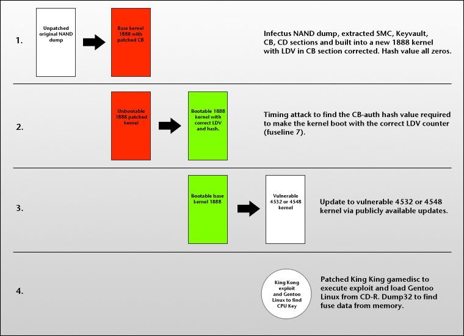
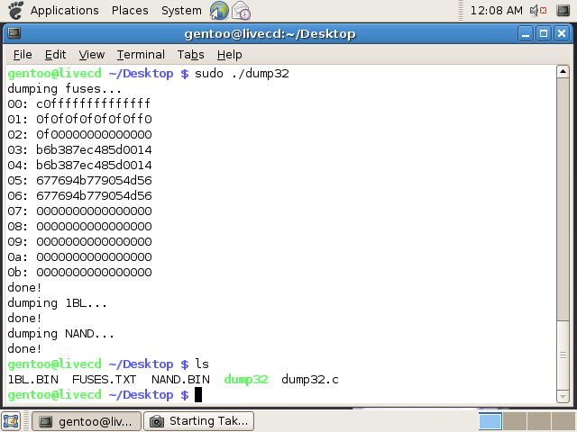

Valid as of December 7th 2007
The timing attack is used allow machines with kernel 4552 or higher to downgrade to a vulnerable kernel. The purpose of the timing attack is to find the required hash values for the altered CB section in a base kernel (1888). The lockdown counter in the CB section is changed to a higher value to allow the base kernel (1888) to bypass the restrictive lockdown counter check during boot-up. The check is what makes it impossible to just flash the NAND and downgrade to a vulnerable kernel.
The community at XboxHacker made this project possible, Arnezami found the Timing Attack vector and figured out the basic concept, and Robinsod built the necessary downgrader hardware and measurement software required to perform the attack.
Purpose
A good explanation by arnezami 1:
[With the CPU key] can we not resign the essential parts of the HV, or anything else, with a modified bootloader?
All executable code on the xbox is (one way or another) signed by a RSA key. MS has the private RSA key and thats
why we will never be able to sign our own executable code. This is what prevents us from running anything different
than what MS has build (like the kernel and bootloaders). This has nothing to do with the cpu key. The only thing we
can do with the cpu key is choose which version of the kernel/bootloader we want to run. But we cannot make changes
to any of these versions themselves.
Then why downgrade?
Because two kernel versions MS build (4532,4548) have a tiny flaw. And when we have our cpu key we can choose to
run these (old) kernels and exploit them by running a patched KK game. After running the exploit we have complete
control over the xbox (but not before that). This means to be able to run homebrew or linux we now have to start the
game, press ok, insert a disc etc.More
Visual representation of the process:

Memcmp Flaw
A memcmp function is used to check the CB-auth HMAC-hash value. The value is 16-bytes long and is done byte-by-byte wise. By changing one byte at a time it's possible to determine if a byte is the valid (true) by measuring the time to compare a false and a true value. Measuring each byte will in the end reveal the correct hash and the boot process can continue.
The time differences for a valid and false value is about 2200 microseconds.
Possibilities: 16 bytes * 256 different possibility for each byte, total 4096 tries. Statistically only half has to be tried, 2048 tries.
Procedure
The official documentation by robinsod for the downgrader hardware and downgrading process can be downloaded from the Timing Attack thread over at XboxHacker.
Dump NAND
Use Infectus or custom hardware (memorycard reader) to make a valid dump of the current NAND.

Patch CB
Get a plain 1888 base kernel and patch the CB lockdown counter with the LDV (LockDownValue) from the CF section in the NAND dump.
- Get the 1888 base kernel from the "usual places".
- Download Degraded.exe to automate the build of a new 1888 image with the SMC, Keyvault, CB, CD and CE sections from the NAND dump. The LDV (fuse count) will be corrected for CB (which is why you need to find a new hash) and the hash value is set to all zeroes.
An external 1888 base kernel is needed because essential system files for 1888 is overwritten in the 4552 update and later, making it impossible to use the NAND dump to create a new 1888 image.
In Degraded.exe click 'Settings', set the 1BL Key to 'DD88AD0C9ED669E7B56794FB68563EFA', select the folder where the 1888 file system is located, and set 'File System Start' to '39'.

Select the NAND dump file under 'Flash Dump' and click 'Build Downgrader Image'.

Flash Image
Flash the new 1888 base kernel build to the NAND.
Connect Infectus chip to the Xbox 360 again, erase and flash the new patched 1888 base kernel image.

Attack Hash
Attack the HMAC-hash value using the timing hardware and DGTool.
- Build the downgrader hardware and connect a serial port cable and power/ground (3.3v or 5v) from the 360 or an external power supply (USB) to the downgrader hardware.
- Connect the USB cable to the Infectus chip. The Infectus is required to flash the NAND page for the CB section with a new value for each new guess (every ~2 seconds).
- Create a folder with the 3 following files; DGTool.exe, Infectus.dll and SiUSBXp.dll. Move the 1888 image to this folder too, e.g. Infectus_5787_downgraded_1888.bin.
- Open a new command-prompt, by Start -> Run -> 'cmd'. Change directory (cd) to the folder where the DGTool.exe is located.
- DGTool normally only needs 2 arguments to start; one being the COM- or serial port the downgrader hardware is connected to and the other is the filename of the patched 1888 image.
DGTool.exe 1 Infectus_5787_downgraded_1888.bin
Enter the command above and press enter. Now power on the Xbox 360 and wait for the 3 red lights to start blinking, aka Red Ring Of Death (RROD). Press enter once more to start the timing process. Let it run for a little over an hour (around 1 hour 10 minutes seems to be normal) and the correct hash value will hopefully be discovered. If successful the last line of text should state 'BOOT!'.

Upgrade Kernel
Once you can boot the 1888 base kernel, you can apply the vulnerable 4532 or 4548 update to use the King King exploit.
Download the 4532 HD DVD update, extract the files into a folder, and burn the content on a regular CD-R. Insert the CD-R into the Xbox 360 and you will be prompted that a update is required.


Get CPU Key
Boot a modified King Kong game disc and launch Gentoo Linux to get the CPU Key.
- Patch the King Kong game image with the King Kong exploit and burn it to a DVD+R Dual Layer disc.
- Burn the latest Gentoo Xenon release (as of writing beta2) from free60.org to a CD-R and insert the disc after pressing 'Start' on the modified King Kong disc.
- Download the dump32 application to dump the fusesets to find the CPU Key of the machine.
wgethttp://home.x-pec.com/~ivc/sites/ivc/xbox360/files/arnezamidump32.tgz
tar zxvf arnezamidump32.tgz
cd arnezamidump32
sudo ./dump32

Save the FUSES.TXT file to a USB memorystick, upload it to yousendit.com, mail it to yourself, or use the 'scp' or 'ftp' utility to transfer it over the network to a computer.
The CPU Key is found by combining line 3 + 5 in the FUSES.TXT file.
It is now possible to upgrade to latest kernel (as of writing 5787) and then downgrade to a lower version again using the 360 Flash Tool. Insert the correct CPU Key in the 360 Flash Tool and patching the LDV (LockDownValue) in the CB/CE/CF section to that of the latest update.
Results
All of my runs can be found on the page below.
Speculation
arnezami:
MS cannot fix this problem by simply changing the memcmp function in a future kernel version. Thats not
gonna help them. The weakness is that the byte-wise memcmp function is in the 1888 kernel/bootloader
(and they cannot change that one anymore of course).2
tmbinc:
sure, microsoft can change the 2BL, and burn a fuse (of the fuseline 2) so that an old 2BL doesn't work anymore...3
arnezami:
Ah. Right. If they can indeed burn these fuses at row 2 than you wouldn't be able to run any of the lower
kernel versions anymore.4
Been thinking about this. I'm now pretty sure when row 2 of the fuses is burned your xbox won't be able to
downgrade or run homebrew anymore (it appears the fuse count number is indeed RSA signed).5
surrido:
you could if it makes you happy wire a switch to the R6T3 and keep it on while being in live and turn it
of when you receive an update.6
tmbinc:
No, a switch at R6T3 doesn't help. It's not the resistor which presence can be detected, but the result
to the fuse (burned or not).
So his question is completely valid: If you remove the resistor, you could end up with an unbootable box
after the next update. But at least you could restore a previous flash. (If you want, you could *then*
re-attach the resistor, and update again, of course loosing the possibility to downgrade).7
Current Situation
The last 2007 fall update, 6683, is still vulnerable and can be downgraded by timing attacking the HMAC-hash value. The update is still vulnerable because the CB (2BL) section of the kernel did not change after the update, only the main CE/CF sections. No other fuses than the obligatory fuseline 7 (to match the LockDownValue in CE/FE) were blown.
The latest revisions of the Xbox 360, the Falcon, has a newer basekernel and CB section, 1921, and this version is patched against the memcmp-vulnerability 8. Making timing attack on these machines impossible until another vulnerability is found.
This might suggest that only newer machines from factory can be patched to fix the memcmp-function in CB.